Aunque parezca raro, el origen de la historia de Nintendo fue un hombre que fabricaba cartas. Este hombre es el japonés Fusajiro Yamauchi, comenzó a desarrollar esta labor en 1889. Sus barajas tuvieron tanto éxito que fundó la sociedad Yamauchi Nintendo Co. Ltd. para gestionar la venta de cartas. La empresa la heredó el yerno de Yamauchi, Sekiryo Kaneda, y tras este pasó a Hiroshi Yamauchi, bisnieto del fundador y uno de los presidentes más recordados de la historia de Nintendo. Estuvo en el cargo más de 50 años, de 1950 a 2002.
En 1963, con Hiroshi Yamauchi ya como presidente, la compañía pasa a llamarse Nintendo Co., Ltd. y empieza su andadura en el mercado de los videojuegos. Uno de sus mayores éxitos fue el desarrollo, en 1973, de un sistema de disparo láser que se convirtió en la principal forma de entretenimiento para los japoneses. Fue en 1977 cuando la empresa comenzó a desarrollar videojuegos. De la mano de Mitsubishi Electric creó las primeras consolas domésticas: «TV Game 15» y «TV Game 6». Nintendo también desarrolló un videojuego basado en el popular juego de mesa Othello. En 1979, la compañía da el salto a EE.UU. e inaugura la sede de Nintendo of America Inc. en Nueva York. En Japón comienzan a venderse las portátiles «GAME & WATCH», que contienen un solo juego.
En 1980, un joven Shigeru Miyamoto creó el juego “Donkey Kong” para máquinas arcade. Este juego fue un gran éxito en todo el mundo, lo que catapultó a la fama a Jumpman, protagonista del juego, que debía rescatar a Pauline de las garras del simio Donkey Kong. Posteriormente, Jumpman cambió su nombre a Mario, debido a su parecido físico con el dueño de las oficinas de Nintendo en Nueva York.
 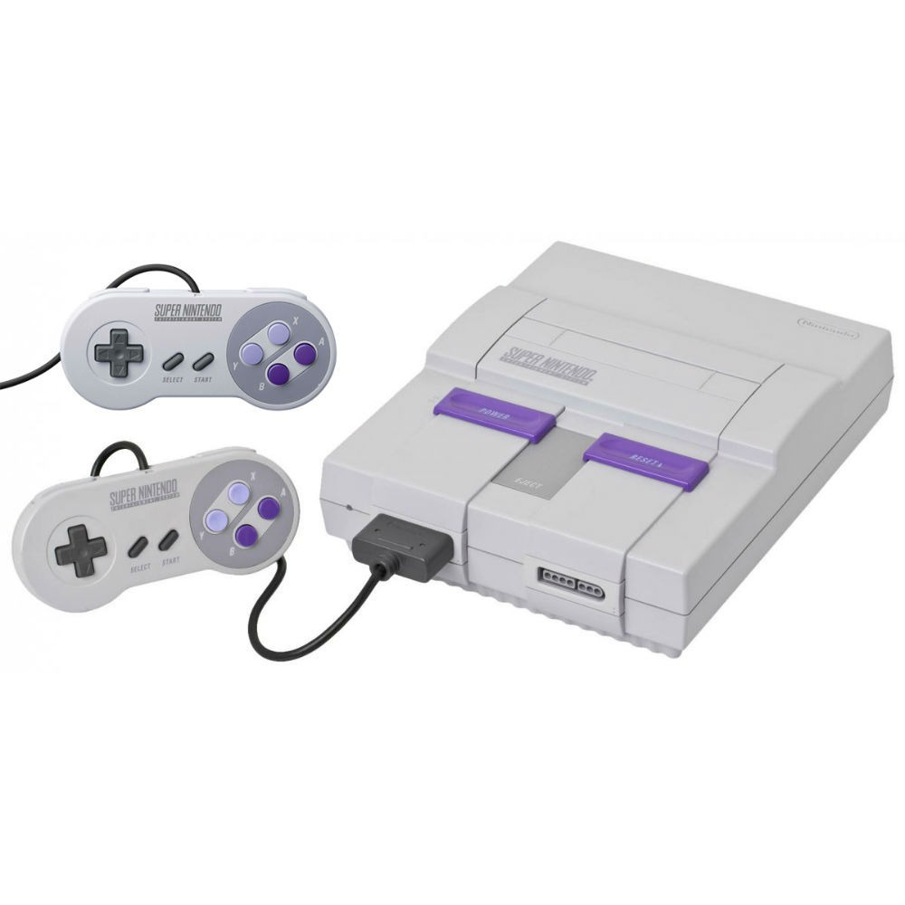
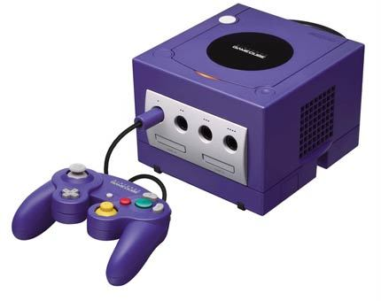
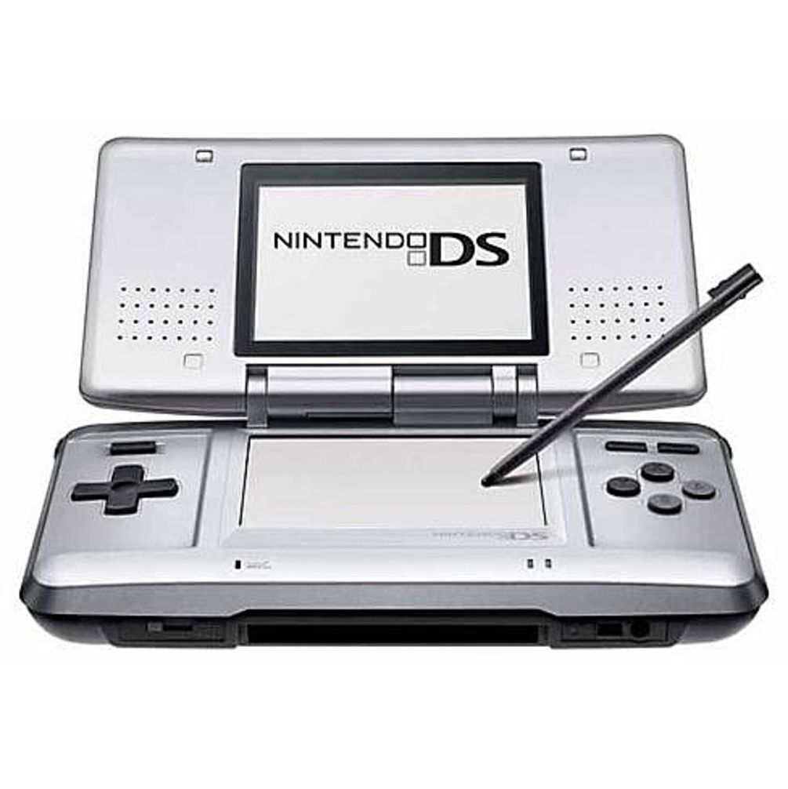
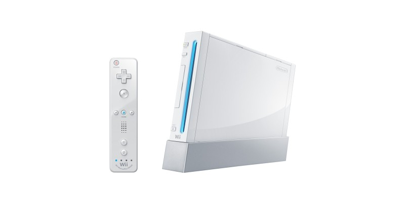
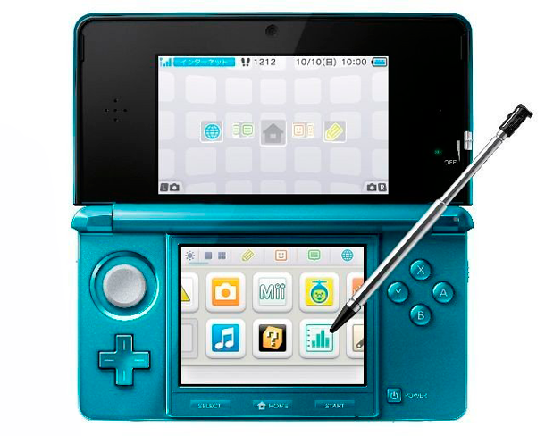
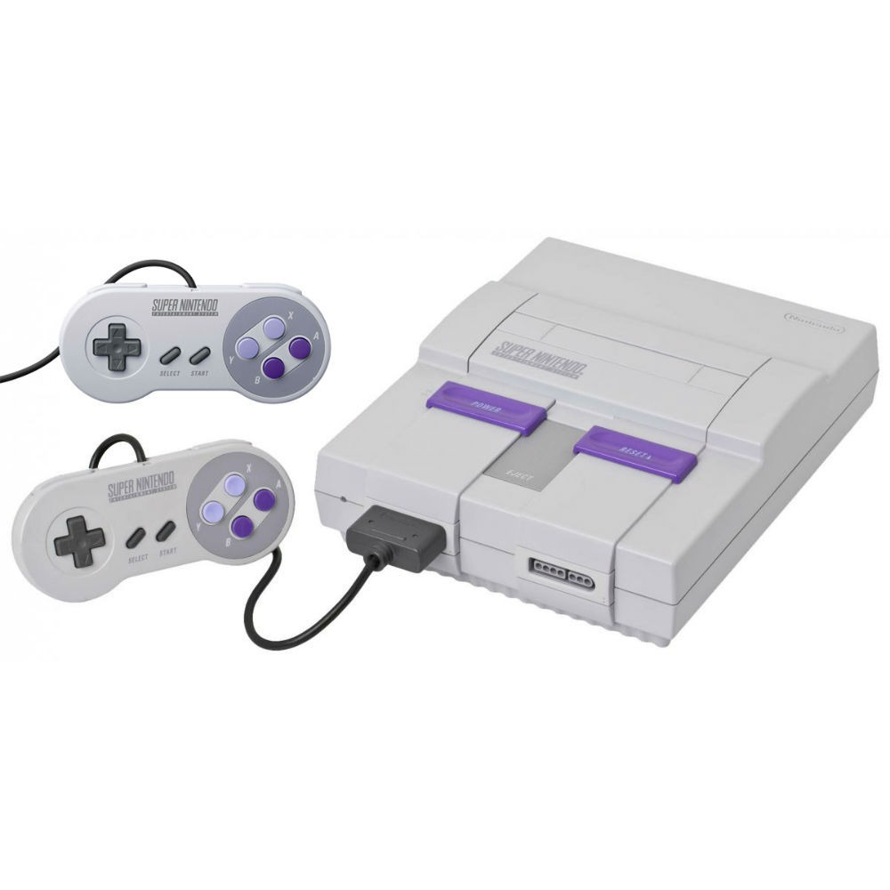
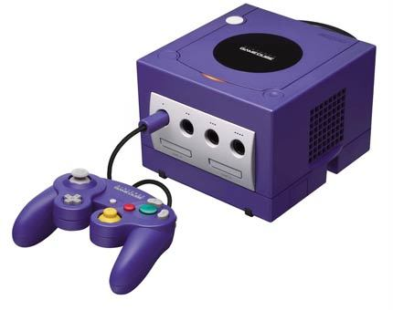
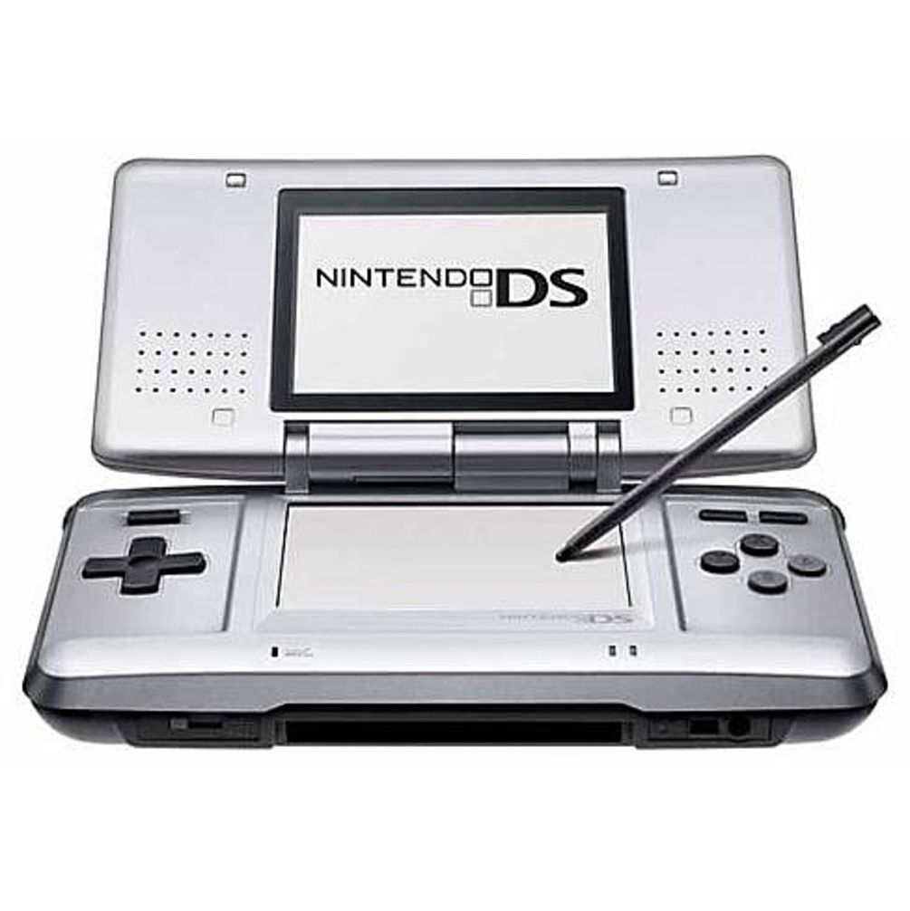
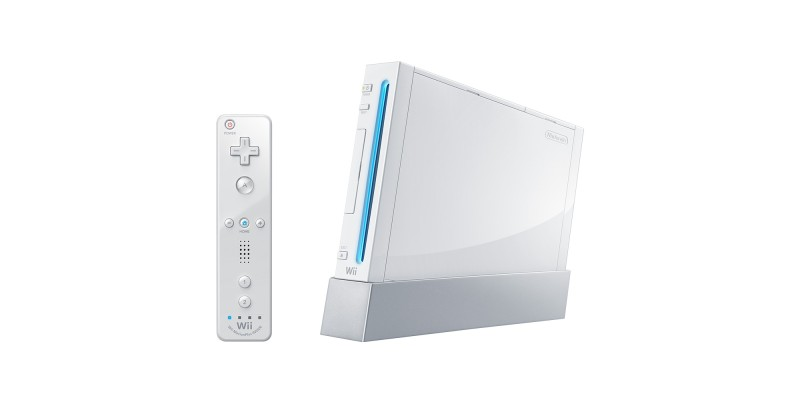
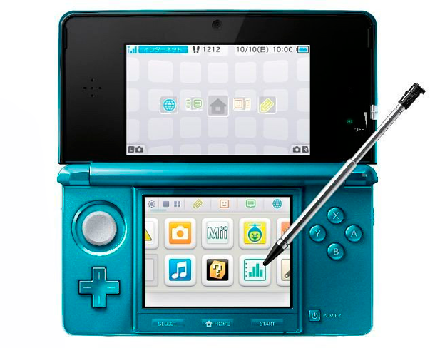


 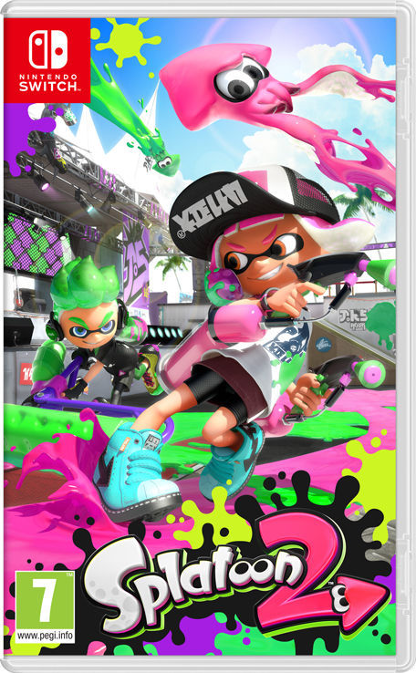
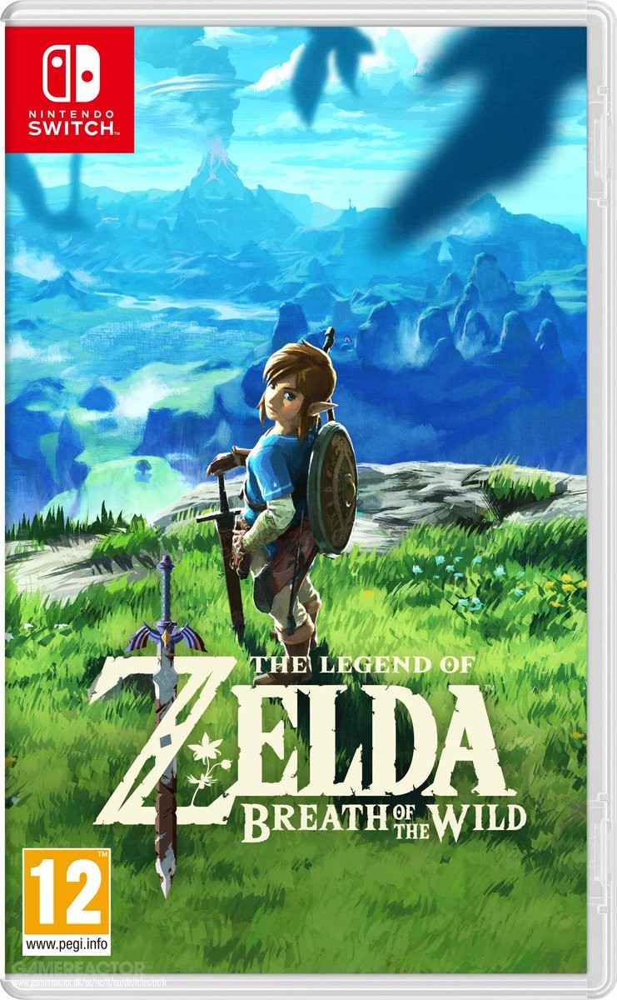
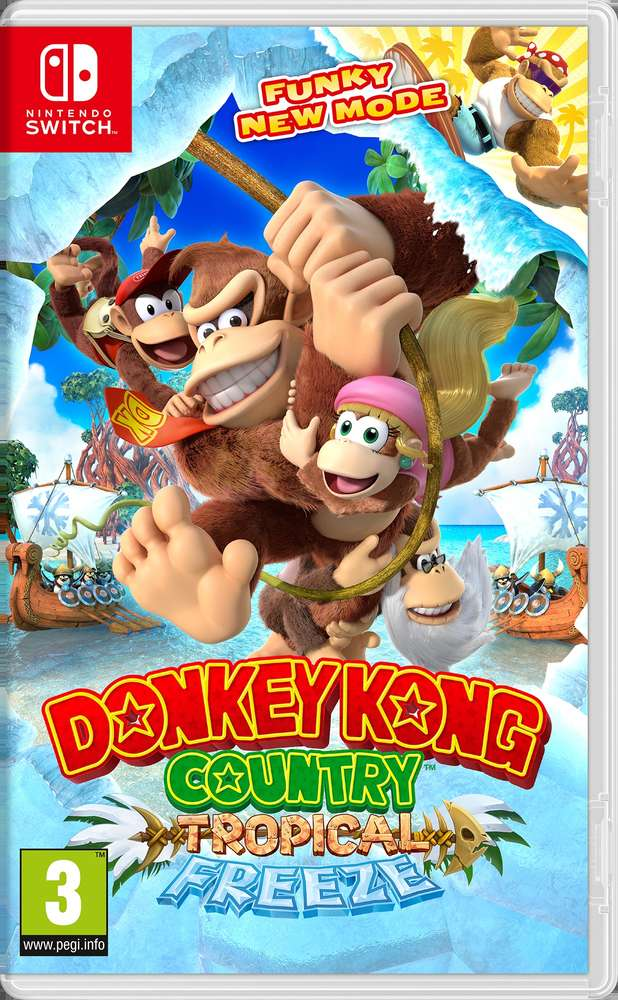
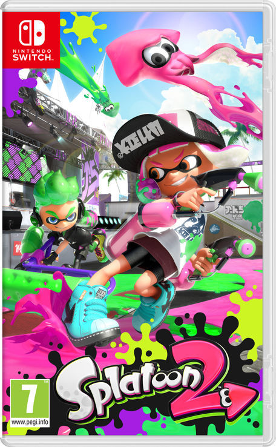
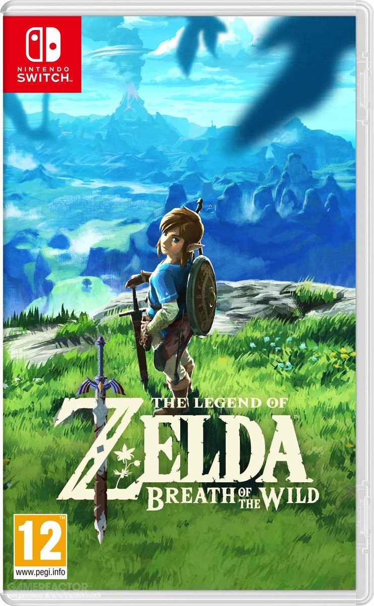
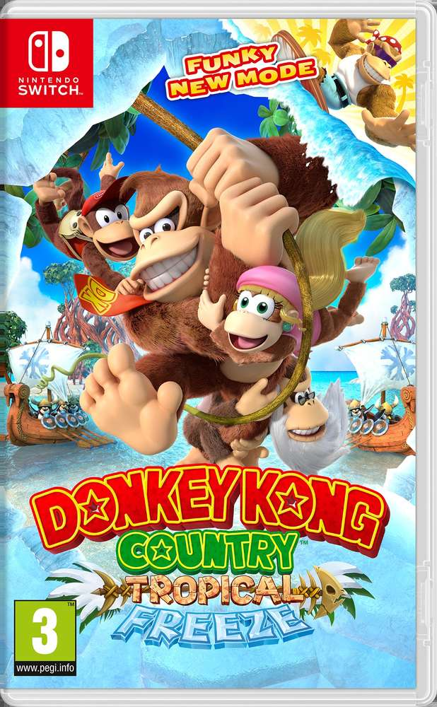